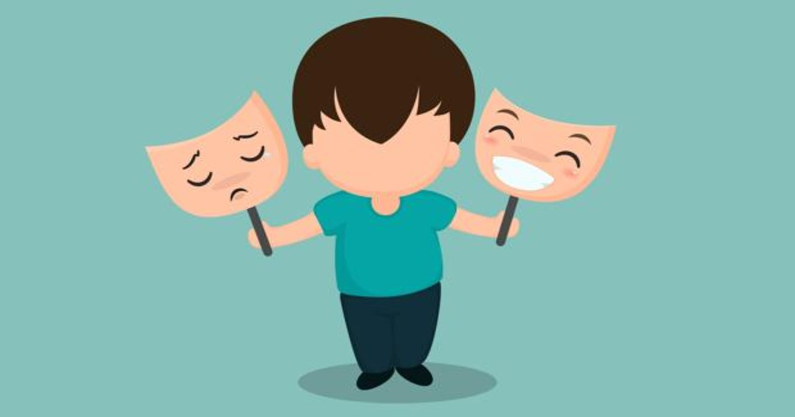
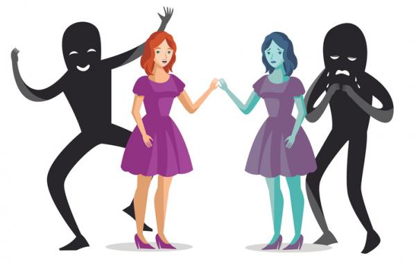

¿Qué es el trastorno bipolar?
El trastorno bipolar es una afección del estado de ánimo que puede provocar cambios de ánimo intensos:
- En ocasiones puede sentirse extremadamente "animado", eufórico, irritable o con energía. Esto se conoce como episodio maníaco
- Otras veces puede sentirse deprimido, triste, indiferente o desesperanzado. A esto se le llama episodio depresivo
- Puede tener síntomas maníacos y depresivos a la vez, también conocido como episodio mixto
Junto con los cambios de ánimo, el trastorno bipolar provoca cambios en el comportamiento, los niveles de energía y los niveles de actividad.
El trastorno bipolar solía tener otros nombres, como depresión maníaca y trastorno maniacodepresivo
¿Cuáles son los tipos de trastorno bipolar?
Hay tres tipos principales de trastorno bipolar:
- El trastorno bipolar I incluye episodios maníacos que duran al menos 7 días o síntomas maníacos tan graves que necesita atención hospitalaria inmediata. Los episodios depresivos también son frecuentes. Suelen durar al menos dos semanas. Este tipo de trastorno bipolar también puede implicar episodios mixtos
- El trastorno bipolar II se define por episodios depresivos, pero en lugar de graves episodios maníacos, se presentan episodios hipomaníacos. La hipomanía es una versión menos grave de la manía
- El trastorno ciclotímico o ciclotimia también presenta síntomas hipomaníacos y depresivos, pero no son tan intensos o duraderos como los episodios hipomaníacos o depresivos. Los síntomas suelen durar al menos dos años en adultos y un año en niños y adolescentes
Con cualquiera de estos tipos, un paciente que tenga cuatro o más episodios de manía o depresión en un año se conoce como "ciclador rápido".
¿Qué causa el trastorno bipolar?
No se conoce la causa exacta del trastorno bipolar. Es probable que varios factores influyan en esta afección, incluyendo la genética, la estructura y función del cerebro y su ambiente.
¿Quiénes corren el riesgo de tener un trastorno bipolar?
Usted tiene un mayor riesgo de trastorno bipolar si tiene un familiar cercano que lo padece. Pasar por un trauma o eventos estresantes en la vida puede aumentar aún más este riesgo
¿Cuáles son los síntomas del trastorno bipolar?
Los síntomas del trastorno bipolar pueden variar, pero involucran cambios de ánimo conocidos como episodios anímicos:
-
Los síntomas de un episodio maníaco pueden incluir:
- Sentirse muy optimista, eufórico o animado
- Sentirse nervioso o acelerado, más activo de lo habitual
- Tener muy mal genio o parecer extremadamente irritable
- Sentir que los pensamientos van muy rápido, lo mismo al hablar
- Dormir menos
- Sentirse inusualmente importante, talentoso o poderoso
- Hacer cosas arriesgadas que muestren falta de juicio, como comer y beber demasiado, gastar o regalar mucho dinero o tener relaciones sexuales poco seguras.
-
Los síntomas de un episodio depresivo pueden incluir:
- Sentirse muy triste, desesperanzado o inútil
- Sentirse solo o aislarse de los demás
- Hablar muy despacio, sentir que no tiene nada que decir u olvidar mucho
- Tener poca energía
- Dormir demasiado
- Comer demasiado o muy poco
- Falta de interés en sus actividades habituales y no poder hacer cosas simples
- Pensar en la muerte o el suicidio
- Un episodio mixto incluye síntomas maníacos y depresivos. Por ejemplo, puede sentirse muy triste, vacío o desesperanzado, mientras que al mismo tiempo se siente extremadamente lleno de energía
Algunas personas con trastorno bipolar pueden tener síntomas más leves. Por ejemplo, puede tener hipomanía en lugar de manía. En la hipomanía, puede sentirse muy bien y descubrir que puede hacer mucho. Puede que no sienta que algo anda mal. Pero su familia
y amigos pueden notar sus cambios de ánimo y en sus niveles de actividad. Es posible que se den cuenta de que su comportamiento es inusual para usted. Después de la hipomanía, es posible que tenga una depresión grave.
Los episodios de estado de ánimo pueden durar una semana o dos o en ocasiones más. En general, los síntomas de un episodio se presentan todos los días durante la mayor parte del día.
¿Cómo se diagnostica el trastorno bipolar?
Para diagnosticar el trastorno bipolar, su profesional de la salud puede usar muchas herramientas:
- Un examen físico
- Su historia clínica, incluyendo preguntas sobre sus síntomas, historial de vida, experiencias e historia familiar
- Pruebas médicas para descartar otras afecciones
- Una evaluación de salud mental. Su proveedor puede realizar la evaluación o puede derivarlo a un especialista en salud mental para evaluarlo
¿Cuáles son los tratamientos para el trastorno bipolar?
El tratamiento puede ayudar a muchas personas, incluyendo aquellas con las formas más graves de trastorno bipolar. Los principales tratamientos para el trastorno bipolar incluyen medicamentos, psicoterapia o ambos:
- Los medicamentos pueden ayudar a controlar los síntomas del trastorno bipolar. Es posible que deba probar varios medicamentos diferentes para encontrar cuál funciona mejor para usted. Algunas personas necesitan tomar más de un medicamento. Es importante tomar su medicamento de manera constante. No deje de tomarlo sin antes hablar con su proveedor. Contacte a su profesional de la salud si tiene alguna pregunta sobre los efectos secundarios de los medicamentos
- La psicoterapia (terapia de conversación) puede ayudarlo a reconocer y cambiar emociones, pensamientos y comportamientos preocupantes. Puede brindarle a usted y su familia apoyo, educación, habilidades y estrategias para enfrentar el trastorno. Existen varios tipos diferentes de psicoterapia que pueden ayudar con el trastorno bipolar
-
Otras opciones de tratamiento incluyen:
- Terapia electroconvulsiva: Procedimiento de estimulación cerebral que puede ayudar a aliviar los síntomas. Esta terapia se utiliza con mayor frecuencia para el trastorno bipolar grave que no mejora con otros tratamientos. También se puede usar cuando alguien necesita un tratamiento que funcione más rápidamente que los medicamentos. Esto podría suceder cuando una persona tiene un alto riesgo de suicidio o es catatónica (no responde)
- Hacer ejercicio aeróbico con regularidad puede ayudar con la depresión, la ansiedad y los problemas para dormir
- Llevar un gráfico vital puede ayudarle a usted y a su proveedor a rastrear y tratar su trastorno bipolar. Un gráfico vital es un registro de los síntomas diarios de su estado de ánimo, tratamientos, patrones de sueño y sucesos que ocurren en su vida
El trastorno bipolar es una enfermedad de por vida. Pero el tratamiento continuo a largo plazo puede ayudar a controlar sus síntomas y permitir vivir una vida saludable y exitosa.
El tratamiento del trastorno bipolar es distinto que el tratamiento de la depresión

Con la depresión (también conocida como “trastorno depresivo mayor” o “depresión unipolar”), las personas se sienten con un estado de ánimo bajo. Pero recuerde, el trastorno bipolar incluye altos y bajos.
Si bien algunos pacientes con depresión pueden recibir tratamiento con antidepresivos, debe tenerse en cuenta que estos medicamentos pueden causar episodios maníacos en los pacientes bipolares.
“Si experimenta síntomas de un episodio maníaco, informe de ello a su médico para que pueda darle el diagnóstico correcto y la medicación adecuada”, finaliza Mathis.
Consideraciones para las mujeres embarazadas
La FDA se asegura de que los medicamentos aprobados sean seguros y eficaces cuando se prescriben según su prospecto. No obstante, la FDA tiene poca información acerca de las mujeres embarazadas que usan medicamentos antipsicóticos porque los estudios
de investigación sobre estos medicamentos no suelen incluirlas.
Si usted está recibiendo tratamiento contra un trastorno bipolar y está embarazada, tiene planeado quedarse embarazada o está amamantando, hable con su médico para evaluar los riesgos y los beneficios de la medicación.
Si toma medicación durante el embarazo, quizá pueda ayudar a otras mujeres embarazadas y a los médicos a obtener más información sobre la seguridad de la medicación si se inscribe en un registro de embarazo. Estos registros
reúnen datos sobre los problemas de seguridad durante el embarazo. La FDA no lleva ningún registro.
Conclusión (y qué hacer si sufre una crisis)
Todas las personas responden de manera distinta a los tratamientos, por lo que quizá tenga que probar varios de ellos antes de encontrar el mejor para usted. Pero el tratamiento puede ayudarle.
Si alguna vez sufre una crisis o piensa en el suicidio, dígaselo inmediatamente a alguien que pueda ayudarle. Puede llamar a su médico, ir a la sala de emergencias de un hospital o incluso llamar al número gratuito de Línea
Nacional de Prevención del SuicidioExternal Link Disclaimerdisclaimer icon al 1-800-273-TALK (8255). Esta línea está abierta las 24 horas del día, los 7 días de la semana y todas las llamadas son confidenciales.
Este artículo está disponible en la página de Artículos para el Consumidor de la FDA, en la cual se publican las últimas novedades sobre todos los productos regulados por la FDA.